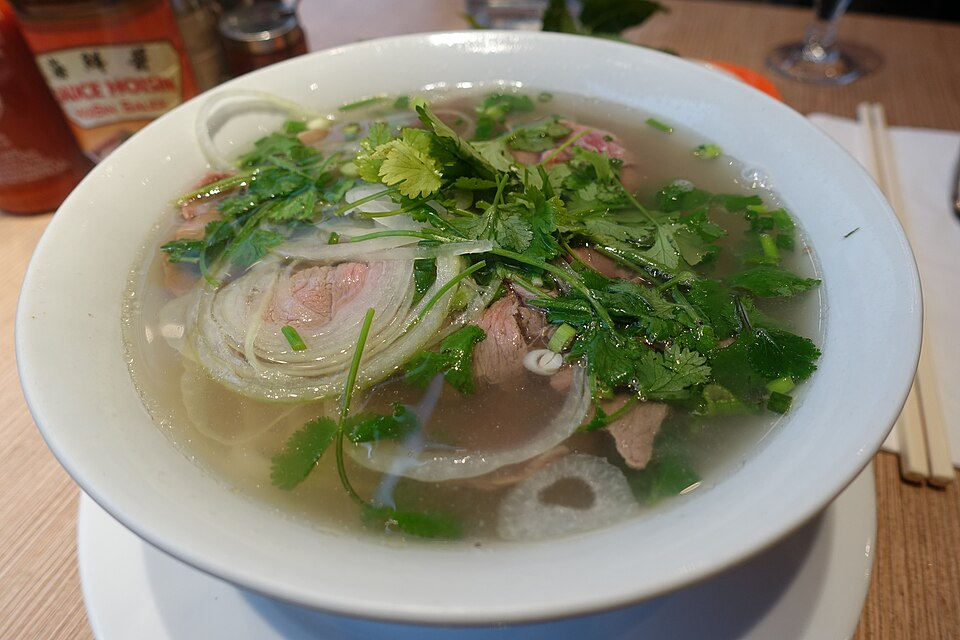
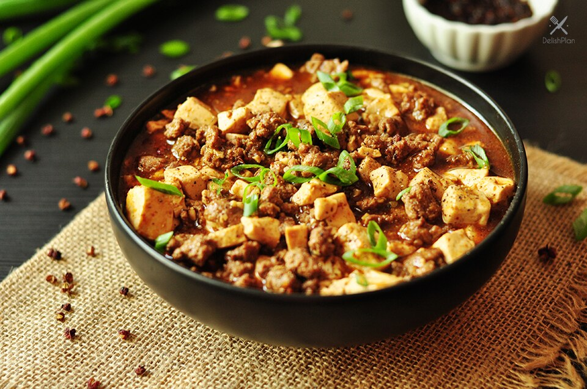
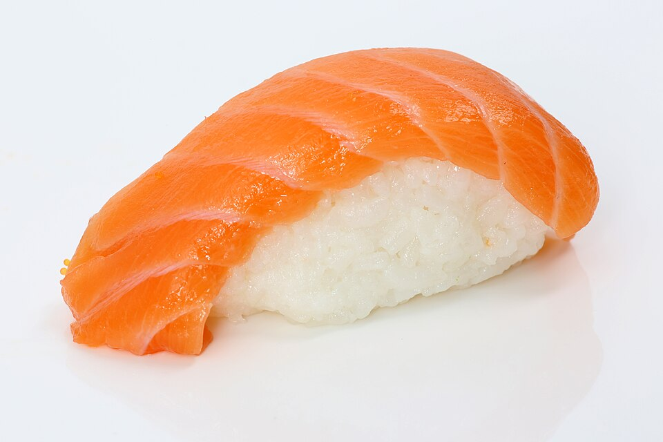
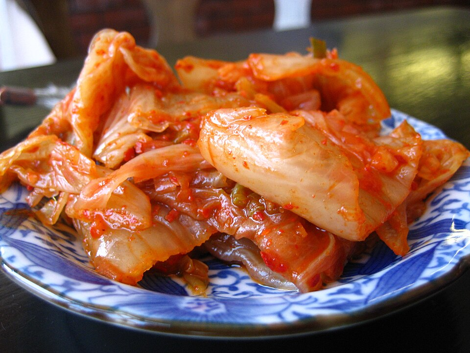

Pho (Vietnam)

Rice noodle soup in a slow-simmered beef or chicken broth, topped with herbs and lime.
Main crop: rice

Rice noodle soup in a slow-simmered beef or chicken broth, topped with herbs and lime.
Main crop: rice

Soft tofu in a spicy Sichuan sauce with chili, fermented bean paste, and minced meat.
Main crop: soybeans

Vinegared rice served with raw fish, vegetables, or egg, often wrapped in seaweed.
Main crops: rice, soybeans

Fermented cabbage seasoned with chili, garlic, ginger, and fish sauce.
Main crop: cabbage